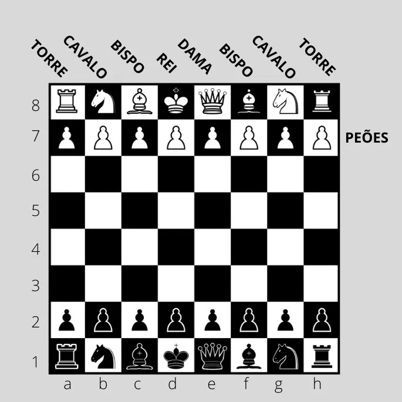

Mais do que um jogo, o xadrez é um campo de batalha onde mente e estratégia se enfrentam
Surgido há mais de 1.500 anos na Índia, o xadrez se espalhou pelo mundo e evoluiu até se tornar um dos jogos mais respeitados e praticados da história, reconhecido pela sua profundidade e elegância.
É um jogo milenar de estratégia que envolve dois jogadores, cada um controlando um exército de 16 peças. O objetivo é capturar o rei do adversário, enquanto protege o seu próprio. O jogo é disputado em um tabuleiro quadrado com 64 casas, alternando entre claras e escuras.
Cada jogador inicia com peças brancas ou pretas, dispostas em duas fileiras. As peças incluem: Rei, Dama (Rainha), Torres, Bispos, Cavalos e Peões, cada uma com movimentos e funções únicas. O jogo começa com as brancas movendo primeiro.
Seja você um iniciante curioso ou alguém em busca de desafio mental, o xadrez oferece um universo de possibilidades.
Prepare-se para mergulhar nesse mundo fascinante, onde cada movimento conta e cada partida é uma nova história a ser contada!
O tabuleiro é composto por 64 casas, organizadas em 8 linhas e 8 colunas. As casas alternam entre cores claras e escuras, facilitando a visualização dos movimentos.
Rei: Move-se uma casa em qualquer direção. O objetivo do jogo é capturar o rei adversário.
Rainha: Move-se em qualquer direção, quantas casas quiser. É a peça mais poderosa do jogo.
Torre: Move-se em linha reta, quantas casas quiser, tanto na horizontal quanto na vertical.
Bispo: Move-se em diagonal, quantas casas quiser. Cada bispo começa em uma cor e permanece nessa cor.
Cavalo: Move-se em forma de "L", duas casas em uma direção e uma casa perpendicular. Pode pular sobre outras peças.

Peão: Move-se para frente uma casa, mas captura na diagonal. No primeiro movimento, pode avançar duas casas.
Além dos movimentos básicos, o xadrez possui algumas jogadas especiais que podem mudar o rumo da partida.
O xadrez é um jogo de estratégia que envolve duas partes: o jogador das peças brancas e o jogador das peças pretas. O objetivo é dar xeque-mate ao rei adversário, ou seja, colocar o rei em uma posição onde ele não possa escapar da captura.
As regras básicas incluem:
Para se tornar um jogador de xadrez habilidoso, é importante desenvolver estratégias e táticas. Aqui estão algumas dicas:
O xadrez é um jogo fascinante que combina estratégia, habilidade e paciência. Ao aprender as regras e movimentos básicos, você está dando os primeiros passos em um mundo repleto de desafios e oportunidades.
Com o tempo, você desenvolverá suas habilidades e estratégias, tornando-se um jogador mais forte e confiante. Lembre-se de que a prática é fundamental para melhorar no xadrez. Jogue com amigos, participe de torneios e estude partidas de jogadores experientes.
Com prática e dedicação, você pode se tornar um jogador habilidoso e desfrutar de todas as emoções que o xadrez tem a oferecer. Boa sorte em sua jornada no xadrez!